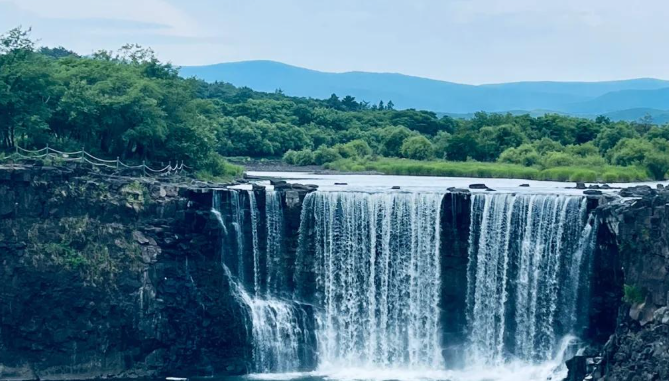
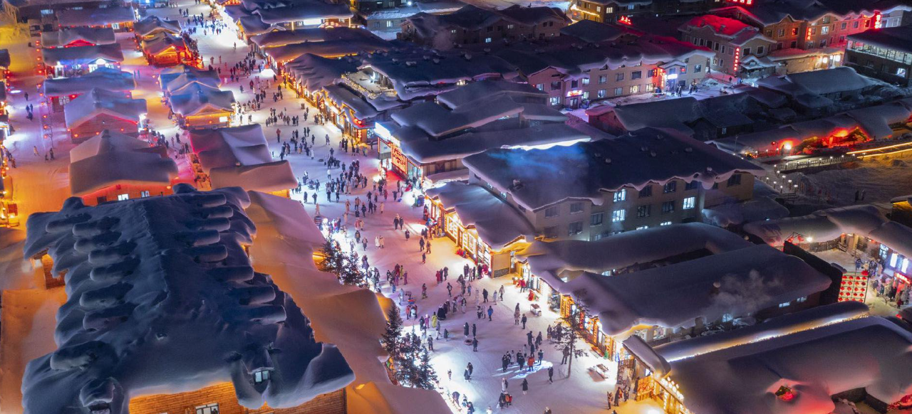
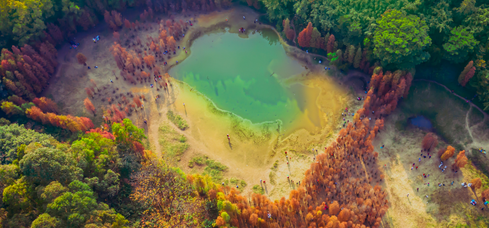

Jingpo Lake is China's largest alpine barrier lake, located in Ning'an City, Mudanjiang. As a national 5A-level tourist attraction, it is renowned for its lake scenery, volcanic lava landforms, and the Diaoshuilou Waterfall. The waterfall stands 20 meters high and 40 meters wide, creating a magnificent spectacle during the rainy season as Jingpo Lake's landmark feature.
Tourism activities at Jingpo Lake include boat cruises, waterfall sightseeing, and crater forest hiking. In winter, the frozen waterfall landscape is particularly unique and attracts numerous photography enthusiasts.

China Snow Town is located in Shuangfeng Forest Farm, Hailin City, Mudanjiang. Named for its heavy snowfall, excellent snow quality, and long snow season, the snow accumulation can reach up to 2 meters thick and last for 7 months. The traditional wooden cabins blanketed in deep snow form unique "snow mushroom" landscapes, making it one of China's most popular winter destinations.
Main activities at Snow Town include skiing, snowmobiling, snow tubing, and Northeast folk culture experiences. The annual Snow Town Tourism Festival features ice and snow sculpture exhibitions and traditional Northeast Yangge dance performances.

The Volcanic Crater National Forest Park is located approximately 50 kilometers northwest of Jingpo Lake. It features crater forests formed by volcanic eruptions, also known as the "Underground Forest." The park contains 10 volcanic craters, with the largest measuring 500 meters in diameter and 200 meters in depth. Dense primeval forests grow inside the craters, including precious species such as Korean pine and spruce.
Park activities include crater hiking and lava tunnel sightseeing, offering a wonderful opportunity to explore volcanic geological formations and experience pristine forest landscapes.